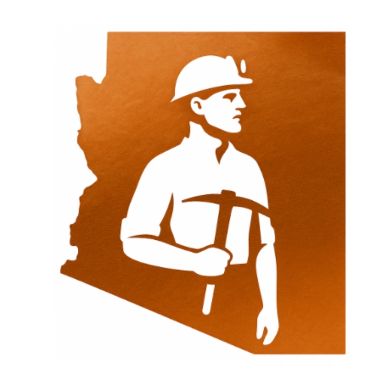

Arizona Miners Research

As part of my MSc dissertation at the University of Strathclyde, I reconstructed the lives of 700 miners who lost their lives in Arizona mining accidents between 1916 and 1929. Beginning with only brief entries in the Arizona State Mine Inspector’s reports, I traced each man through census records, vital records, newspapers, immigration records, probate files, city directories, military records, and many other historical sources to rebuild his life story.
Each miner was researched individually, correlating evidence from numerous independent record groups to transform a brief fatality entry into a documented life history. Every investigation was unique. Some miners left only a faint documentary trail, while others could be followed across decades and across continents. Together, these reconstructed life histories revealed a far richer and more nuanced picture of Arizona’s mining workforce than had previously been possible.
The project culminated in a comprehensive genealogical database documenting the lives of all 700 known Arizona miners who died during the study period. More importantly, it restored the identities of men who had long been remembered only for the circumstances of their deaths.
Although this project began as an academic study, its purpose has always been deeply personal: to preserve the stories of the men behind the records. If one of these miners was your ancestor, or if your research has led you to one of these families, I would welcome the opportunity to hear from you. The research remains ongoing, and I welcome the opportunity to connect with descendants, fellow researchers, and anyone interested in Arizona’s mining history. Whether you’re searching for an ancestor, looking for guidance, or simply have a question, I’m always happy to help where I can.